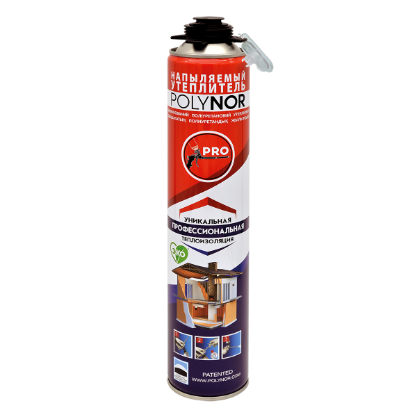

Yangi avlod purkagichli POLYNOR® issiqlik izolyatsiyasi va qurilish polimerlari
Aerozol ballonidagi bir komponentli purkagichli penopoliuretan (NPU). Rossiya Federatsiyasi va Yevropa Ittifoqi sertifikatlariga ega yagona choksiz isitgich — endi Toshkentdagi rasmiy diler omboridan to‘g‘ridan-to‘g‘ri yetkazib beriladi.

An’anaviy isitgichlardan 10 ta muhandislik ustunligi
Mineral paxta va penoplastdan farqli o‘laroq, POLYNOR yuzaga sepilganda kengayib, barcha yoriqlarni to‘ldiradi hamda sirt bilan yagona monolit qatlam hosil qiladi.
100% Choksiz izolyatsiya
Ulanish choklari va tirqishlar yo‘qligi sababli "sovuq ko‘priklari" hosil bo‘lmaydi va uydagi issiqlik yo‘qotilishi 45% gacha qisqaradi.
Yuqori tezlik: 1 ballon = 2 daqiqa
Bitta aerozol balloni yordamida atigi 2 daqiqa ichida 2 m² maydonni 3 sm qalinlikdagi issiqlik qatlami bilan qoplash mumkin.
Mog‘or va zamburug‘dan himoya
Yuzaga zich yopishib monolit hosil qilgani uchun kondensat to‘planmaydi, namlik kirmaydi va zamburug‘ (plesen) ko‘payishiga yo‘l qo‘ymaydi.
Kemiruvchilar zarar yetkazmaydi
Sichqonlar, kalamushlar va hasharotlar Polynor poliuretan qatlamiga ta’sir qilmaydi hamda uning ichida in qurmaydi.
Karkas va plyonkalar talab etilmaydi
Bug‘ izolyatsiyasi plyonkalari, murakkab profil karkaslar va mexanik dyubel-mixlar xarid qilishga hojat yo‘q — byudjetni 30% tejaydi.
Barcha materiallarga ideal adgeziya
G‘isht, gazoblok, beton, yog‘och, profnastil, metall, shifer va hatto murakkab geometrik quvurlarga mukammal yopishadi.
Ekstremal haroratga bardoshli
-80°C qahratondan +115°C jaziramagacha bo‘lgan haroratda suv va havo bilan kimyoviy reaksiyaga kirishmaydi — O‘zbekiston iqlimi uchun mos.
Ekologik xavfsiz va hidsiz
Qotgandan so‘ng havoga zararli formaldegid yoki chang zarralarini chiqarmaydi. Yevropa Ittifoqi va Rossiya ekologik sertifikatlariga ega.
O‘zbekistonda eng ko‘p sotilayotgan POLYNOR mahsulotlari
Barcha mahsulotlar Qozon shahridagi «XimStar» zavodidan to‘g‘ridan-to‘g‘ri keltiriladi.
Obyektingiz uchun nechta POLYNOR balloni kerak?
Maydon va izolyatsiya qalinligini tanlang — tizim zarur ballonlar soni, korobkalar miqdori va Toshkentdagi dilerlik narxini avtomatik hisoblab beradi.
* 3 qutidan ortiq buyurtmalarga Toshkent shahri bo‘ylab bepul yetkazib berish va ulgurji chegirma amal qiladi!
POLYNOR® va boshqa isitgichlar farqi
Qurilishda nima uchun ustalar va buyurtmachilar klassik rulonli materiallardan voz kechib, purkagichli PPUga o‘tishmoqda?
| Ko‘rsatkichlar | POLYNOR® (Purkagichli PPU) | Mineral (Bazalt) Paxta | Penoplast / Penopolistirol |
|---|---|---|---|
| Issiqlik o‘tkazuvchanlik, Vt/(m·K) | 0.025 (Eng yuqori issiqlik himoyasi) | 0.042 – 0.048 | 0.036 – 0.041 |
| Choklar va "sovuq ko‘priklari" | 100% Choksiz monolit qoplama | Plitalar orasida choklar bor | Tirqishlarni ko‘piklash talab etiladi |
| Suv va namlik shimishi | < 1% (Namlikdan qo‘rqmaydi) | 15–30% (Ho‘l bo‘lsa xususiyatini yo‘qotadi) | 2–4% |
| Bug‘ izolyatsiya va karkas zarurati | Talab etilmaydi (To‘g‘ridan-to‘g‘ri sepiladi) | Majburiy (Karkas + 2 qavat membrana) | Karkas yoki yelim + dyubel-mixlar |
| 100 m² maydonni montaj qilish vaqti | 1 ish kuni (1 nafar usta) | 3–5 kun (brigada bilan) | 3–4 kun |
| Kafolatlangan xizmat muddati | 45 – 50 yildan ortiq (cho‘kmaydi) | 10 – 15 yil (vaqt o‘tib cho‘kadi) | 15 – 25 yil |
POLYNOR bo‘yicha mijozlarimizning eng muhim savollari
Rossiyadagi bosh ofis va O‘zbekistondagi texnik mutaxassislarimiz javoblari.
Bizning manzil va tezkor aloqa
Mahsulot namunalarini o‘z ko‘zingiz bilan ko‘rish, sinovdan o‘tkazish va ulgurji xarid qilish uchun Toshkentdagi markaziy ofisimizga tashrif buyuring.